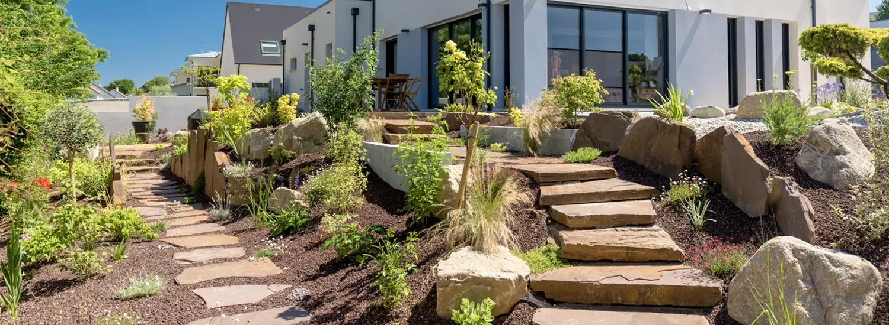
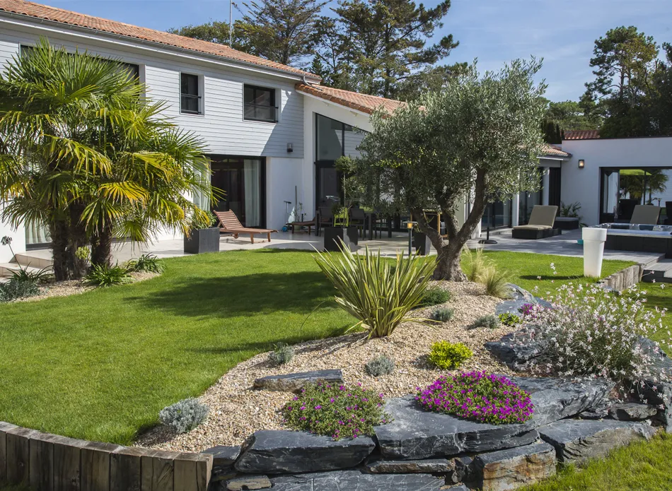
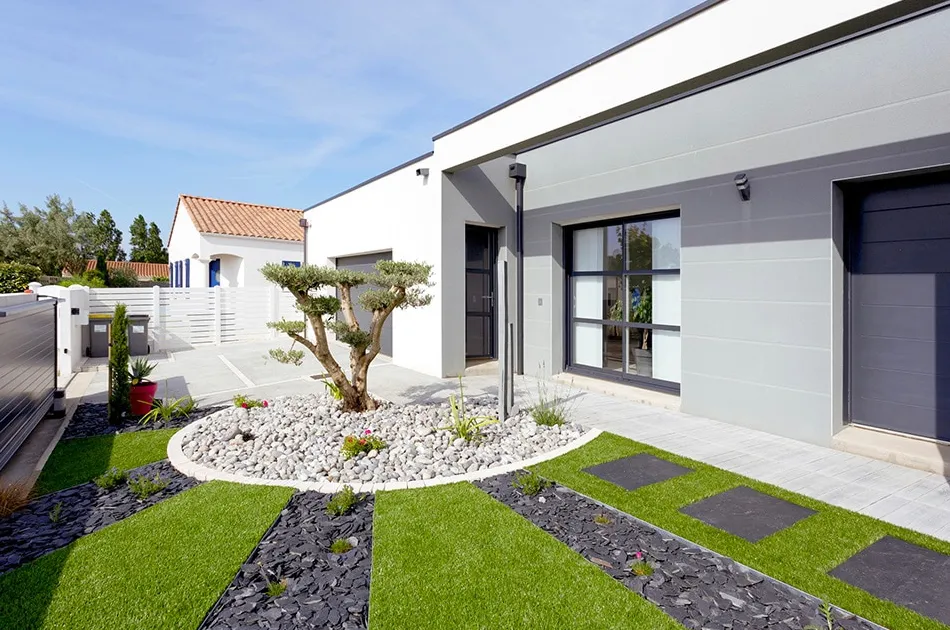
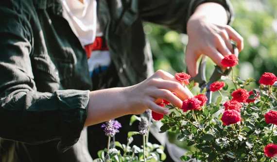

- Accueil
- Zones d’intervention
- Wattignies
Lagrene Paysagiste 59 : taille de haie à Wattignies, 59139
Paysagiste à Wattignies · 59139
La taille de haie n’est pas simplement une tâche, c’est un art que nous maîtrisons chez Lagrene Paysagiste 59 à Wattignies, 59139. Nos experts comprennent l’importance de chaque coupe et ajustement pour créer des haies à la fois magnifiques et saines. Nous ne nous contentons pas de tailler : nous sculptons vos haies avec précision pour qu’elles complètent harmonieusement votre paysage. Chaque geste est réfléchi pour stimuler une croissance équilibrée tout en préservant l’esthétique, offrant ainsi à votre jardin une allure élégante et soignée. Notre réputation en tant qu’experts paysagistes à Wattignies, 59139, découle de notre dévouement à l’excellence. Lagrene Paysagiste 59 combine passion, compétence et créativité pour transformer vos rêves de jardin en réalité. Chaque projet est une œuvre d’art vivante, témoignant de notre engagement envers des espaces extérieurs uniques et remarquables.
Notre savoir-faire
Paysagiste entretien de jardin à prix abordable dans tout Wattignies
Lagrene Paysagiste 59 à Wattignies, 59139, vous propose bien plus qu’un simple entretien de jardin. Nous nous engageons à prendre soin de chaque aspect de votre espace extérieur. De la taille des arbustes à la tonte de la pelouse, en passant par la gestion des plantes, nous travaillons avec minutie pour vous offrir un jardin éclatant de santé. Notre objectif est de vous fournir un entretien complet et méticuleux, tout en veillant à maintenir des tarifs abordables pour vous permettre de profiter d’un espace extérieur resplendissant. Chez Lagrene Paysagiste 59 à Wattignies, 59139, nous croyons en la transparence. Nos prix compétitifs sont assortis d’une clarté totale : chaque aspect financier est explicitement détaillé dans nos devis, assurant ainsi une compréhension totale des coûts impliqués dans vos projets paysagers.
Paysagiste pas cher à Wattignies
La qualité et l’accessibilité vont de pair chez Lagrene Paysagiste 59 à Wattignies, 59139. Nous nous engageons à fournir des services paysagers de qualité supérieure à des tarifs compétitifs. Notre équipe expérimentée met tout en œuvre pour vous offrir des solutions abordables sans compromettre l’excellence de nos prestations. Nous croyons fermement que chacun devrait avoir accès à des services paysagers de qualité, c’est pourquoi nous proposons des solutions adaptées à tous les budgets. Au-delà des simples services, Lagrene Paysagiste 59 à Wattignies, 59139, propose une approche complète pour magnifier vos espaces extérieurs. Notre équipe polyvalente vous accompagne de la conception à l’entretien, unissant compétence et créativité pour créer des jardins captivants.

Paysagiste à Wattignies
Notre entreprise paysagiste à Wattignies, 59139, dépasse les simples services d’aménagement. Lagrene Paysagiste 59 offre une gamme complète de services, de la conception initiale à l’entretien régulier. Notre approche holistique signifie que chaque détail est soigneusement pensé pour transformer vos espaces extérieurs en havres de paix. Nous sommes là pour vous accompagner à chaque étape, avec une équipe polyvalente prête à réaliser vos rêves paysagers. Lagrene Paysagiste 59 à Wattignies, 59139, prouve qu’une qualité exceptionnelle ne doit pas être coûteuse. Nous offrons des services de paysagisme de haute qualité à des tarifs abordables, garantissant ainsi que tout le monde puisse profiter d’un jardin splendide sans compromis sur la qualité.


Paysagiste à Wattignies
Lagrene Paysagiste 59, un paysagiste créatif
Chez Lagrene Paysagiste 59, la transparence est notre credo. Chaque devis que nous fournissons à Wattignies, 59139, est détaillé et transparent. Nous nous engageons à fournir des prix compétitifs sans compromettre la qualité de nos services paysagers. Notre objectif est de vous offrir des solutions paysagères de qualité supérieure à des prix accessibles, en veillant à ce que chaque aspect financier soit clair et compréhensible pour nos clients. Chez Lagrene Paysagiste 59 à Wattignies, 59139, confiez l’entretien de votre jardin à une équipe professionnelle dévouée. Nous prenons en charge tous les aspects, de la coupe à la fertilisation, assurant un espace extérieur florissant et épanoui, reflétant votre style de vie.
Demander mon devis gratuitVotre projet
Prix compétitifs et transparents
Notre réputation en tant qu’expert paysagiste à Wattignies, 59139, est le fruit d’années de dévouement et de compétence. Lagrene Paysagiste 59 associe créativité, expertise technique et sensibilité artistique pour donner vie à des espaces extérieurs uniques. Chaque projet est le reflet de notre engagement à créer des environnements extérieurs distinctifs qui correspondent à vos aspirations. Notre équipe se consacre à offrir des solutions paysagères personnalisées, alliant qualité, esthétique et praticité pour vous offrir une expérience exceptionnelle. La maîtrise de l’art de la taille de haie est notre spécialité chez Lagrene Paysagiste 59 à Wattignies, 59139. Nos spécialistes comprennent l’importance d’une taille précise pour façonner des haies impeccables, mêlant expertise et attention méticuleuse pour créer des lignes nettes et équilibrées dans votre jardin.

Nos services à Wattignies
Huit savoir-faire pour votre jardin
Élagage, haies, pelouse, dessouchage, abattage et entretien : Lagrene Paysagiste 59 intervient à Wattignies (59139).
Élagage
Des arbres sains, sûrs et élégants.
 02
02Dessouchage arbre et haie
Souches et racines retirées, terrain dégagé.
 03
03Taille de haie
Des haies nettes, denses et bien dessinées.
 04
04Création de pelouse
Un gazon dense, de la préparation du sol à la pose.
 05
05Abattage arbres et haies
Abattage d’arbres et de haies, travail soigné.

06Jardinier
Entretien de jardin, de la tonte à la plantation.
 07
07Élagueur
Élagage de tout type d’arbre.
 08
08Taille de haie et arbres fruitiers
Des coupes pensées pour la floraison et la récolte.
Zones d’intervention
Nous intervenons aussi près de chez vous
Depuis Lille, Lagrene Paysagiste 59 se déplace à Wattignies et dans toutes les communes voisines.
38 boulevard Carnot, Bureau n° 3 · 59000 Lille